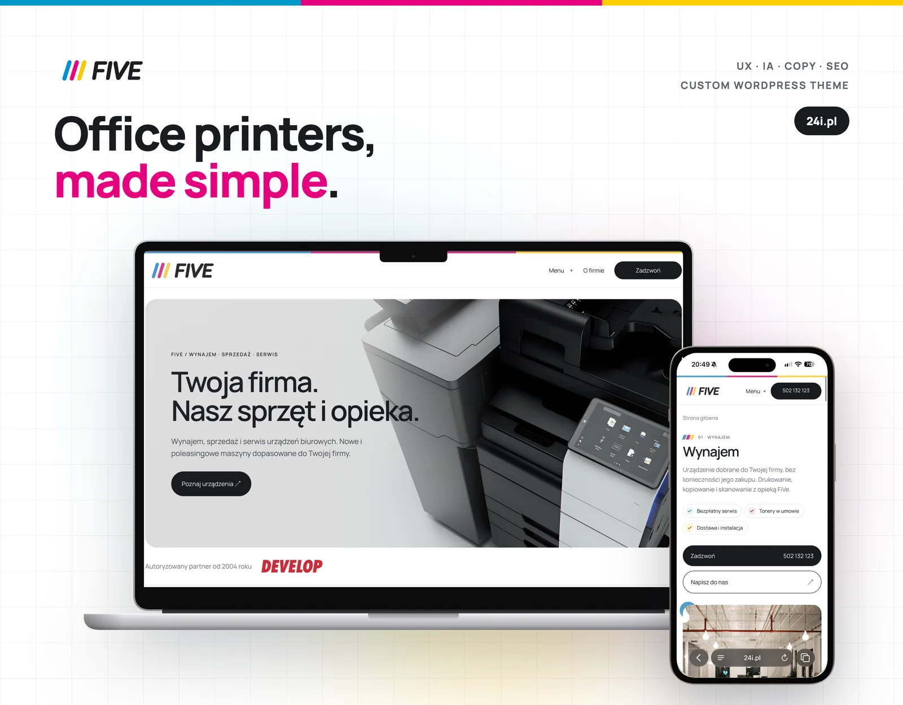

FiVe
Website for a company renting, selling and servicing DEVELOP office printers in Pomerania. Custom WordPress theme, device selection tool, filterable catalogue and local SEO pages.
UXInformation architectureCopywritingSEOWordPress
Case study
01
